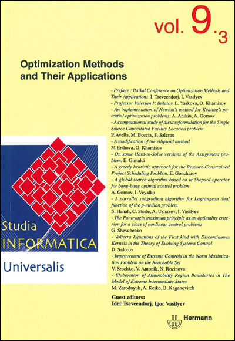

-
Lenci, A., Sahlgren, M.,
Jeuniaux, P. , Cuba Gyllensten, A., & Miliani, M. (2022). A comprehensive comparative evaluation and analysis of Distributional Semantic Models. Language Resources and Evaluation, 56, 1269-1313. https://doi.org/10.1007/s10579-021-09575-z -
Tremblay, S., Gagnon, J.-F., Lafond, D., Hodgetts, H. M., Doiron, M., &
Jeuniaux, P. P. J. M. H. (2017). A cognitive prosthesis for complex decision-making. Applied Ergonomics, 58, 349-360. https://doi.org/10.1016/j.apergo.2016.07.009 -
Louwerse, M. M., Dale, R., Bard, E. G., &
Jeuniaux, P. (2012). Behavior matching in multimodal communication is synchronized. Cognitive Science. 1-23. http://doi.org/10.1111/j.1551-6709.2012.01269.x -
Louwerse, M. M., &
Jeuniaux, P. (2010). The Linguistic and Embodied Nature of Conceptual Processing. Cognition, 114, 96-104. http://doi.org/10.1016/j.cognition.2009.09.002 -
Bellissens, C.,
Jeuniaux, P. , Duran, N. D., & McNamara, D. S. (2010). A text relatedness and dependency computational model: Using Latent Semantic Analysis and Coh-Metrix to predict self-explanation quality. Studia Informatica Universalis, 8 (1), 85-125. https://dblp.org -
Louwerse, M. M., Crossley, S., &
Jeuniaux, P. (2008). What if? Conditionals in educational registers. Linguistics and Education, 19, 56-69. http://doi.org/10.1016/j.linged.2008.01.001 -
Louwerse, M. M., Cai, Z., Hu, X., Ventura, M., &
Jeuniaux, P. (2006). Cognitively inspired natural-language based knowledge representations: Further explorations of latent semantic analysis. International Journal of Artificial Intelligence Tools, 15, 1021-1039. http://doi.org/10.1142/S0218213006003090


